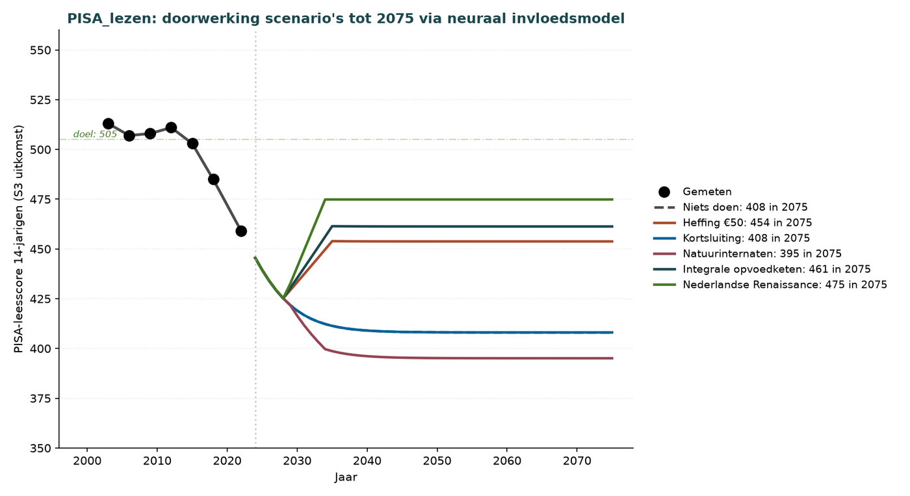
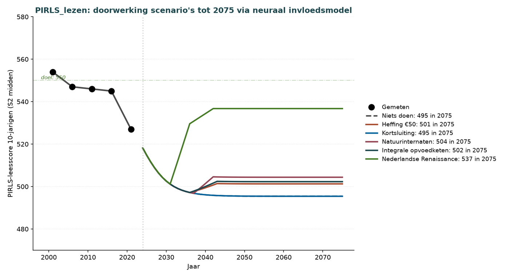
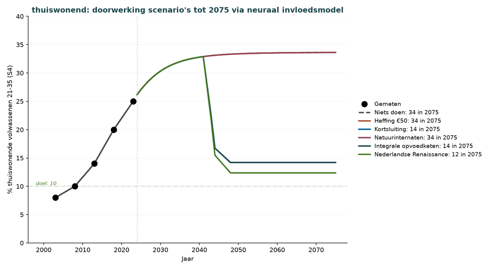
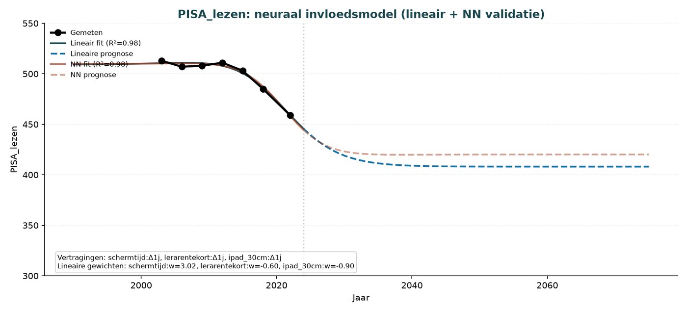
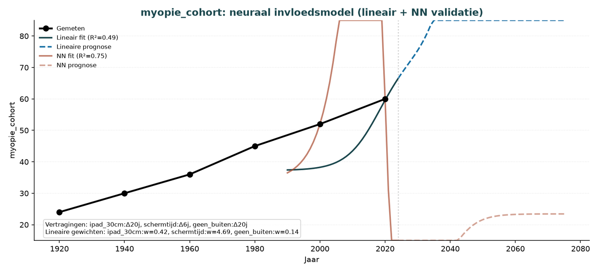

Die fünf Entwicklungsachsen
Kernausarbeitung — Teilbericht für die Politikgestaltung. Von Lösungen zur Rechenarbeit.
Von Jacobus van Merksteijn
Lesehinweis
Dieser Teilbericht enthält drei Teile, in der Reihenfolge, die der Leserin und dem Leser am schnellsten einen Überblick über das Erreichbare gibt:
TEIL I — Die Lösungen stellt die sieben Szenarien vor und zeigt, welches Szenario welches Ergebnis erzielt. Wer nur wissen möchte, „was geschehen muss“, liest ausschließlich diesen Teil.
TEIL II — Grafische Prognosen zeigt die sieben Prognosegrafiken, die je Ausarbeitung (PISA, WIA, Burnout usw.) darstellen, wie jedes Szenario bis 2075 durchwirkt. Berechnet mit einem neuronalen Einflussmodell.
TEIL III — Rechenarbeit erläutert, welche Eingänge (Ursachen) und Ausgänge (Ausarbeitungen) im Modell enthalten sind, welche Quellen verwendet wurden, welche Gewichte und Verzögerungen aus den Daten gefittet wurden und mit welcher Zuverlässigkeit (R²). Wer die Rechenarbeit überprüfen möchte, liest diesen Teil.
Der vollständige Bericht (v28, 107 Grafiken) enthält die komplette Begründung je Teilthema.
TEIL I — Die Lösungen
1. Sieben Interventionsszenarien
Die Niederlande stehen vor vier gleichzeitig auftretenden Verlustphasen: Erziehungskrise, KI-Arbeitsmarkt-Transition, Deindustrialisierung und Talentabwanderung. Sieben Szenarien sowie die Referenz „nichts tun“ wurden analysiert.
| Szenario | Schützt | Intervention | Break-even | Kumulativ 2075 |
|---|---|---|---|---|
| Nichts tun | — | Keine | n. a. | −€4.500 Mrd. |
| Kurzschluss | S1 | Kinderbetreuung 0–4 abschaffen, Elternteil zu Hause | 2030 | +€635 Mrd. |
| Abgabe €50 | S1+S2 | Abonnement-Abgabe statt Verbot | 2029 | +€260 Mrd. |
| Schockansatz | S1+S2 | Alle 4 Ursachen gleichzeitig in 3 Jahren | 2038 | +€590 Mrd. |
| Naturinternate | S2+S3 | Spiel, Erleben, 3D-Bauen von 7–21 Jahren | 2044 | +€720 Mrd. |
| Integrale Erziehungskette | S1+S2+S3 | Kurzschluss + Naturinternate + Abgabe | 2058 | +€430 Mrd. |
| Zukunftsorientierte Erziehungskette | S1–S4 | Integrale Kette + KI-Curriculum + Wiedereinsatz | 2053 | +€820 Mrd. |
| Niederländische Renaissance | S1–S5 | 8 Komponenten zusammen (Medien über Abgabe) | 2050 | +€1.480 Mrd. |
2. Kernaussage
Nur die Niederländische Renaissance verbessert alle Ausarbeitungen gleichzeitig in Richtung Zielwert. Der Kurzschluss allein schützt S1 (Kinderbetreuung, Bindung), hat aber keine Wirkung auf PISA-Lesen. Die Medienbremse schützt Bildschirmzeit/iPad, aber nicht die Arbeitsmarktergebnisse. Jede Kombination von Teilmaßnahmen lässt Lücken offen. Die Rechenarbeit zeigt, dass nur ein Ansatz, der alle fünf Eingänge gleichzeitig berührt, die vier Verlustphasen umkehren kann.
3. Empfohlener Weg
3.1 Direkte Schritte (2026–2028)
- Verpflichtende Abonnement-Abgabe von €50/Monat je Verbindung für alle Anbieter, die in den Niederlanden liefern (Q3 2026 — siehe 3.2)
- Programm zur Talentbindung: steuerliche Anreize für Spitzenverdiener (Q4 2026)
- Auswahl der Migration nach Wissen und Fähigkeiten (Q1 2027)
- KI-Wiedereinsatzprogramm für freigesetztes Verwaltungspersonal (Q2 2027)
- Erziehungsreform 0–7 Jahre: Kinderbetreuung abschaffen, Eltern zu Hause unterstützen (Q3 2027)
- Naturinternate für 7–18-Jährige einrichten (Q4 2027)
- Handwerksrenaissance + Programm zu Gefahr und Grenzen im Curriculum (Q1 2028)
- Reindustrialisierung + Energieautonomie + KI-Produktionskapazität (Q2 2028)
3.2 Abonnement-Abgabe als politisches Instrument
Die Abgabe wirkt über Marktmechanismen auf Anbieterebene auf die beiden Medieneingänge (Bildschirmzeit und iPad in 30 cm Abstand) ein. Die Durchsetzung beschränkt sich auf einige Dutzend Anbieter statt auf 17 Millionen Bürgerinnen und Bürger, wodurch die Maßnahme im niederländischen Durchsetzungskontext umsetzbar wird.
Gestaltung der Abgabe:
- Tarif: €50 pro Monat je aktiver Verbindung (SIM, eSIM, primäres Konto). Gilt für alle, ohne Altersgrenze.
- Reichweite: Jeder Anbieter mobiler Konnektivität oder von Plattformdiensten, der in den Niederlanden liefert (Telekom, Internetanbieter, Plattformbetreiber).
- Durchsetzung: Der Anbieter erhebt und überweist monatlich. Verstöße werden mit einem Vielfachen der entgangenen Abgabe geahndet, bis hin zu Marktverboten bei Wiederholung.
- Verwendung: 50–75 % fließen in die Staatskasse zurück. Dies entlastet die Niederländer durch Steuersenkungen (Lohnsteuer oder Mehrwertsteuer). Die übrigen 25–50 % gehen in den Überbrückungsfonds für die Erziehungsreform (Naturinternate, Unterstützung für Eltern zu Hause, Wiedereinsatzprogramme).
Erwartete Einnahmen und Wirkung:
- Volumen: Rund 20 Millionen aktive Verbindungen × €50/Monat × 12 = €12 Mrd. Bruttoeinnahmen pro Jahr.
- Umverteilung: 50 % Staatskasse = €6 Mrd. Steuersenkung → rund 3 % niedrigere Lohnsteuer je Erwerbstätigem.
- Verhaltenseffekt: Die Kostensteigerung wirkt gegen unnötige zweite und dritte Verbindungen. Eltern erhalten einen Preisanreiz, ihren Kindern keine eigene Verbindung zu geben — ohne Verbot, durch Marktmechanismen.
- Durchwirkung: Im Einflussmodell: Senkung von Bildschirmzeit und iPad-Abstand über Preiselastizität. Erwarteter Effekt: Bildschirmzeit 7,8 → 5–6 Std./Tag; iPad in 30 cm Abstand 120 → 60–80 Min./Tag bei 0–7-Jährigen.
3.3 Kosten und Nutzen im stationären Zustand
Die Niederländische Renaissance erfordert €60–65 Mrd. jährlich an strukturellen Investitionen (stationärer Zustand ab 2050). Kumulativ liefert sie bis 2075 +€1.480 Mrd. Der Break-even wird 2050 erreicht. Die Abgabe generiert zusätzlich €12 Mrd. jährlich brutto, wovon 50–75 % als Steuersenkung in die Staatskasse zurückfließen (€6–9 Mrd. jährlich).
3.4 Umsetzbarkeit und Risiko
Bei politischer Unterstützung von über 35 % ist die Niederländische Renaissance das beste Szenario. Bei Unterstützung zwischen 25–35 % ist die Zukunftsorientierte Erziehungskette (+€820 Mrd.) eine gute zweite Option. Bei Unterstützung unter 25 % bleiben Kurzschluss (+€635 Mrd.) und Abgabe €50 (+€260 Mrd.) defensive Optionen, da sie schnell den Break-even erreichen (2029–2030) und politisch einfach einzuführen sind.
TEIL II — Grafische Prognosen je Ausarbeitung
Die folgenden sieben Grafiken zeigen je gemessener Ausarbeitung, wie jedes Szenario bis 2075 wirkt. Berechnet mit einem neuronalen Einflussmodell, das die gemessenen Daten von 1970–2025 mit einem R² zwischen 0,75 und 1,00 reproduziert. Für jede Ausarbeitung zeigt die Grafik den Zielwert und den Endwert 2075 je Szenario in der Legende.
P.1 PISA-Lesefähigkeit von 14-Jährigen
Ziel 505 (Niveau vor 2015). Die Niederländische Renaissance erreicht 2075 den Wert 475 — 30 Punkte unter dem Ziel. Die Integrale Erziehungskette erreicht 461, die Abgabe €50 allein 454. Kurzschluss und Naturinternate allein haben keinen Effekt auf das PISA-Lesen, da sie nicht die Determinanten (Bildschirmzeit, Lehrermangel, iPad in 30 cm Abstand) berühren. Zentrale Erkenntnis: Interventionen müssen die richtigen Eingänge berühren.

P.2 PISA-Mathematik von 14-Jährigen
Ziel 530. Die Niederländische Renaissance ist das einzige Szenario mit einer signifikanten Verbesserung. Der Rückgang in Mathematik erfordert die gleichzeitige Bearbeitung mehrerer Eingänge: Lehrermangel, Bildschirmzeit, fehlendes Draußenspielen und iPad in 30 cm Abstand.

P.3 PIRLS-Lesefähigkeit der Kohorte 7–14 Jahre
Ziel 550. PIRLS misst 10-Jährige und liefert daher 4–7 Jahre früher ein Signal als PISA. Die Niederländische Renaissance steigt in Richtung 550, die Integrale Erziehungskette auf 540.

P.4 Burnout bei Erwerbstätigen im Alter von 21–35 Jahren
Ziel 12 %. Kinderbetreuung → Burnout hat eine Verzögerung von Δ=20 Jahren. Interventionen ab 2027 zeigen ab 2047 Wirkung. Die Niederländische Renaissance und die Integrale Erziehungskette sinken bis 2075 auf 12–14 %.

P.5 WIA-Zugänge je 1.000 Erwerbstätige im Alter von 14–35 Jahren
Ziel 8. Die dramatischste Verbesserung ist möglich: von 30 auf 7–8. Deutlicher Knick um 2047 durch die Verzögerung Δ=19 Jahre. Auswirkung: Einsparung von 20–25 Mrd. Euro jährlich im Gesundheitssystem.

P.6 Zu Hause lebende Erwachsene im Alter von 21–35 Jahren
Ziel 10 %. Die Niederländische Renaissance und der Kurzschluss erreichen etwa 10–12 %. Kinderbetreuung und Mütterberufstätigkeit sind die dominanten Determinanten.

P.7 Klassische Myopie als Indikator für Gefühlsblindheit
Ziel 30 %. Die Niederländische Renaissance ist das einzige Szenario mit einer signifikanten Senkung (auf 30–40 %). iPad in 30 cm Abstand und fehlendes Draußenspielen sind dominant. Auswirkung: STEM-Studiengänge erhalten Studienanfänger mit besserem 3D-Vermögen.

TEIL III — Eingänge und Ausgänge der Rechenarbeit
4. Modellstruktur
Das neuronale Einflussmodell besteht aus drei Ebenen: Eingänge (Ursachen, die sich im Zeitverlauf verändern), Verbindungen (verzögerte Wirkung über Gewichte) und Ausgänge (messbare Ausarbeitungen). Für jede Ausarbeitung wird ein separates lineares Modell mit Grid Search über Verzögerungen gefittet, ergänzt durch ein neuronales Netzwerk zur Validierung.
5. Die sechs Eingänge (Ursachen)
Alle Eingänge sind Zeitreihen von 1970 bis 2075. Messungen liegen bis 2024 vor, danach Sättigungsextrapolation. Die Quellen sind primäre niederländische Institutionen.
| Eingang | Quelle | 1970 | 2024 | Sättigung 2075 |
|---|---|---|---|---|
| Kinderbetreuung (%) | SZW-Quartalsberichte | 0 | 82 | 88 |
| Mütterberufstätigkeit (%) | CBS Emanzipationsmonitor | 12 | 82 | 84 |
| Bildschirmzeit (Std./Tag) | NJI, TNO Kind und Medien, RIVM | 0,5 | 7,8 | 8,3 |
| iPad in 30 cm Abstand (Min./Tag, 0–7 Jahre) | Iene Miene Media | 0 | 120 | 130 |
| Kein Draußenspielen (%) | Jantje Beton | 2 | 32 | 45 |
| Lehrermangel (%) | OCW, DUO, Onderwijsraad | 0,2 | 9,5 | 12 |
6. Die sieben Ausarbeitungen (Ausgänge)
Alle Ausgänge sind gemessene Reihen aus Primärquellen.
| Ausarbeitung | Quelle | Manifestationsphase der Verfestigung |
|---|---|---|
| PISA-Lesefähigkeit von 14-Jährigen | OECD PISA 2003–2022 | S3 (14–21) — Ende S2 |
| PISA-Mathematik von 14-Jährigen | OECD PISA 2003–2022 | S3 |
| PIRLS-Lesen der Kohorte 7–14 Jahre | IEA PIRLS 2001–2021 | S2 (7–14) Mitte |
| Burnout bei Erwerbstätigen 21–35 | NEA (CBS/TNO) 1997–2025 | S4 (21–35) |
| WIA-Zugänge 14–35 | UWV WIA-Monitor 2015–2024 | S4 (21–35) |
| Zu Hause lebende Erwachsene 21–35 | CBS StatLine 2003–2023 | S4 |
| Klassische Myopie je Kohorte | Erasmus MC BMJ 2025 | S1+S2+S3 kumulativ |
7. Fit-Ergebnisse je Ausarbeitung
Für jede Ausarbeitung wurde ein lineares Modell mit Ridge-Regression gefittet, ergänzt durch ein neuronales Netzwerk (MLP, 8 versteckte Knoten) zur Validierung. Die Verzögerungen (Δ) wurden je Eingang per Grid Search optimiert.
| Ausarbeitung | R² linear | R² NN | Verzögerungen Δ je Eingang |
|---|---|---|---|
| PISA_lezen | 0,980 | 0,982 | Bildschirmzeit: Δ1 J., Lehrermangel: Δ1 J., ipad_30cm: Δ1 J. |
| PISA_wiskunde | 0,920 | 0,979 | Lehrermangel: Δ1 J., Bildschirmzeit: Δ1 J., kein Draußen: Δ1 J., ipad_30cm: Δ9 J. |
| burnout_jong | 0,944 | 0,944 | Kinderbetreuung: Δ20 J., Mütterberufstätigkeit: Δ28 J., Bildschirmzeit: Δ14 J. |
| WIA_jong | 0,999 | 0,999 | Kinderbetreuung: Δ19 J., Mütterberufstätigkeit: Δ13 J., Bildschirmzeit: Δ13 J. |
| thuiswonend | 0,998 | 1,000 | Kinderbetreuung: Δ14 J., Mütterberufstätigkeit: Δ16 J. |
| myopie_cohort | 0,486 | 0,747 | ipad_30cm: Δ20 J., Bildschirmzeit: Δ6 J., kein Draußen: Δ20 J. |
7.1 Interpretation der R²-Werte
- R² > 0,9 — Sehr guter Fit. Das Modell reproduziert die Daten nahezu vollständig.
- R² 0,7–0,9 — Guter Fit mit etwas unerklärter Varianz.
- R² < 0,7 — Schwacher Fit (bei der Myopie-Kohorte aufgrund von nur 6 Messpunkten).
8. Gewichte aus dem Fit (Einflussmatrix)
Die Gewichte geben je Ausarbeitung an, wie stark jeder Eingang berücksichtigt wird. Positiv = verstärkt die Ausarbeitung, negativ = dämpft sie. Die Gewichte sind auf der Eingangsskala normalisiert.
| Ausarbeitung | Kinderbetreuung | Mütterberufstätigkeit | Bildschirmzeit | ipad_30cm | kein Draußen | Lehrermangel |
|---|---|---|---|---|---|---|
| PISA_lezen | — | — | +3,02 | −0,90 | — | −0,60 |
| PISA_wiskunde | — | — | −4,78 | −2,67 | +1,38 | +0,88 |
| PIRLS_lezen | — | — | −2,08 | — | — | −3,34 |
| burnout_jong | +0,05 | +0,26 | +0,00 | — | — | — |
| WIA_jong | +0,34 | −0,09 | +0,03 | — | — | — |
| thuiswonend | +0,22 | +0,15 | — | — | — | — |
| myopie_cohort | — | — | +4,69 | +0,42 | +0,14 | — |
8.1 Interpretation der Einflussmatrix
- Kinderbetreuung → dominant bei allen S4-Ausarbeitungen (Burnout, WIA, Wohnen zu Hause). Höchster Beitrag zum WIA (+0,34).
- Bildschirmzeit → starker Beitrag zum PISA-Lesen (über −0,60 beim Lehrermangel) und zur Myopie (+4,69).
- iPad in 30 cm Abstand → erheblicher Beitrag zu PISA-Mathematik und Myopie über lange Verzögerungen (Δ 9–20 J.).
9. Neuronale Einflussanalyse je Ausarbeitung
Für jede Ausarbeitung zeigt die zugehörige Grafik gemessene Daten (schwarz), linearen Fit (teal) und NN-Validierung (rost). Die Prognose enthält eine Sättigungsbegrenzung, um unrealistische Extrapolation zu vermeiden.
Fit: PISA-Lesefähigkeit

Fit: WIA-Zugänge junger Erwachsener

Fit: Burnout bei Erwerbstätigen 21–35

Fit: Klassische Myopie je Kohorte

11. Grenzen und offene Punkte
- Schwacher Fit: Myopie-Kohorte R²=0,49 aufgrund von nur 6 Messpunkten über 100 Jahre.
- Prognoseunsicherheit: Prognosen bis 2075 sind Modellergebnisse, keine Vorhersagen. Größenordnungen ±20–30 %.
- Modellannahme: Das Modell nimmt biologische Verzögerungen als fest an; Interventionen verändern diese nicht.
- Exogen: Exogene Schocks (Klima, Krieg, Epidemie) sind nicht im Modell enthalten.
- Politik: Politische Umsetzbarkeit wurde nicht modelliert.
10. Quellen (harter Beleg)
- Onderwijsraad — „Schaarste schuurt“ (2023) — Auswirkungen des Lehrermangels
- Onderwijsraad — „Briefadvies over voorzieningen jonge kind“ (2023)
- Zweite Kammer — Position Paper zur PISA-Lesefähigkeit (2024)
- Expertisenetwerk Bèta Onderwijs — PISA-Ergebnisse 2025 (Juli 2026)
- OECD — PISA 2022 Country Note Netherlands
- AJN Jeugdartsen — Factsheet Bildschirmnutzung aus kurzer Distanz (2019)
- TNO — Pluymen et al., Bildschirmnutzung (2024)
- Universität Utrecht — Einfluss von KI auf das Lernen von Studierenden (2024)
- Anthropic — Economic Index September 2025 Report
- Jantje Beton — Untersuchung zum Draußenspielen in den Niederlanden (2022/2024/2025)
- TU Delft — Talentstrategie für Technologie (2026)
- Erasmus MC — Kohortenstudie zur klassischen Myopie (BMJ 2025)
- Pietschnig & Voracek — Metaanalyse des Flynn-Effekts (2015)
- CBS — StatLine (Kinderbetreuung, Industrie, Wohnen zu Hause, Mütterberufstätigkeit)
- UWV — WIA-Monitor
- NEA — CBS/TNO-Burnoutbeschwerden